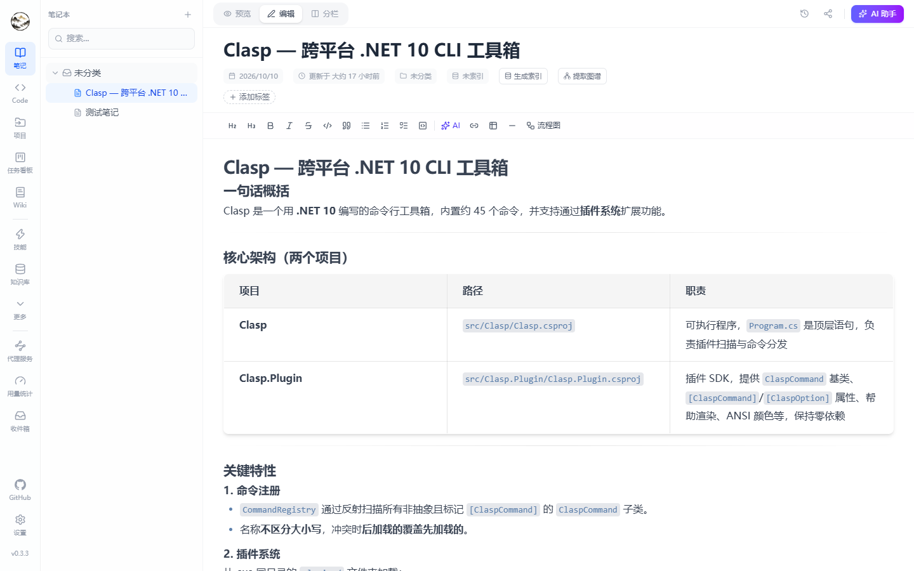
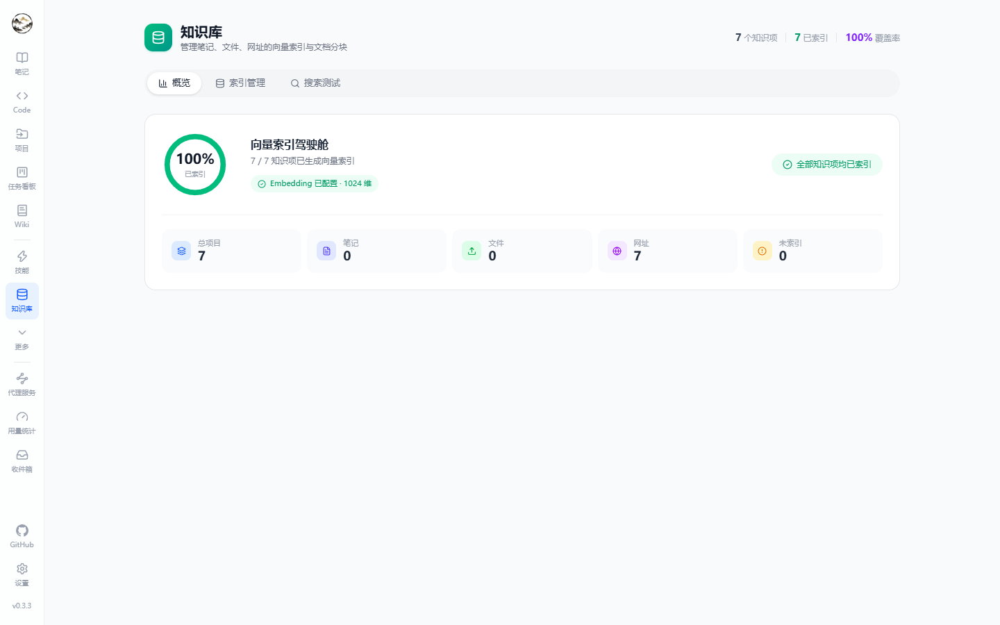
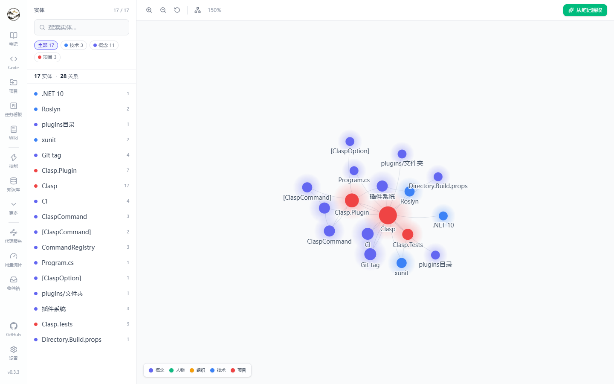
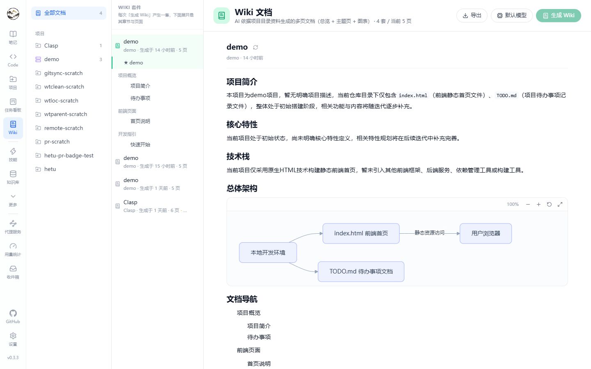
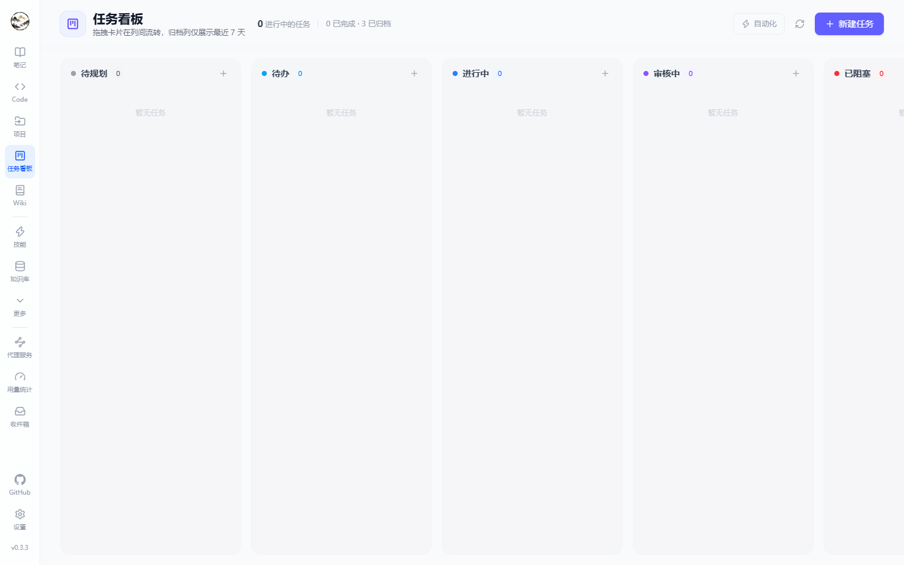
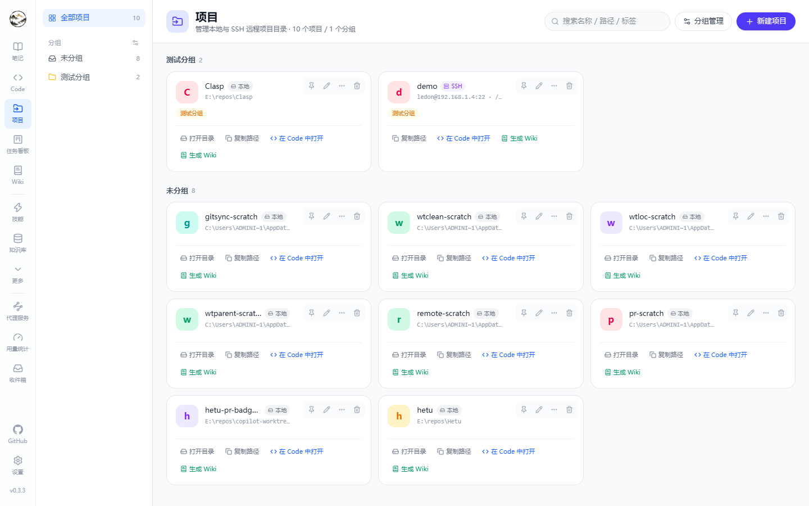

一个进程、一份数据库、两个入口
笔记页负责写与整理，Code 页（/code）负责问与做；两者读写同一份 SQLite/PostgreSQL 数据，共用知识库、图谱、记忆与任务系统。桌面版会把后端作为 sidecar 一起拉起，数据落在系统用户数据目录。
笔记
Milkdown 所见即所得 + CodeMirror 源码视图；选中文字调 AI（润色/翻译/精简/扩写/解释/自定义）；笔记本、标签、历史版本、分享链接、回收站、Markdown 导出。
Agent 工作台
会话与话题、SSE 流式事件、工具调用与审批、五档权限模式、推理强度、发送队列与运行中引导；话题可蒸馏成笔记。
Code 会话
本地或 SSH 仓库；当前分支或独立工作树；本地+远程分支与单键 Git 同步；文件 / 更改 / 检查点 / Git / PR / 浏览器 / 终端 七个面板。
检索与知识结构
笔记、文件、网址统一分块向量化；知识图谱抽取实体与关系；按项目生成 Wiki；长期记忆配 Dream 巩固。
组织与自动化
任务看板（可指派 Agent 执行并记录步骤）、可视化工作流、后台任务与 Cron 定时任务、收件箱通知。
扩展与模型
智能体（提示预设 + 工具白名单 + 审批策略）、技能（内置/自定义/磁盘目录）、内置工具开关、MCP 服务器、多供应商与按场景默认模型、代理接口、用量与成本。
技术选择与边界
以下都是代码里实际生效的机制，不是概念描述。
| 主题 | 实现 |
|---|---|
| 存储 | SQLite（默认，Data Source=hetu.db）+ sqlite-vec 向量扩展；可切 PostgreSQL 16+ + pgvector，同一套功能，DatabaseProvider 配置切换 |
| 分页与聚合 | 列表接口一律数据库侧完成（SQL COUNT + OFFSET/FETCH、GROUP BY 计数与摘要）；知识库状态、向量摘要不再整表加载 |
| SQLite 时间排序 | provider 不支持在 SQL 中对 DateTimeOffset 排序/聚合，仓储内置 GetPagedByDateAsync / CountByAsync / PruneAsync 规避（投影排序键后内存定序、按主键回表） |
| 只读接口缓存 | 被页面轮询的状态类接口加 [ResponseCache] 短时缓存，减少重复查询 |
| Agent 循环 | SSE 事件流（delta / thinking / 工具调用与结果 / steering / 检查点 / 审批 / 通知）；运行中可排队或引导；后台任务统一进 TaskItem 记录 |
| 代码隔离 | git worktree 独立工作区，默认在仓库父目录 .hetu-worktrees/<仓库>/<工作树>，可按「已合并 + 空闲」自动清理 |
| PR 集成 | 按 origin 远端自动选择 gh 或 glab；未安装时给出对应平台安装命令 |
| 桌面 | Tauri 2 外壳 + sidecar 后端；fat / slim 双渠道安装包；更新走 GitHub + 三个加速镜像；安装钩子在覆盖文件前清理残留后端进程 |
| 工程约束 | 后端 dotnet build 与前端 eslint 均要求 0 告警，且不允许任何抑制注释（pragma / eslint-disable / SuppressMessage） |
更多实现细节（分层、请求流、数据模型、性能实践）见 架构与实现。
实际界面（点击可看原图）
下面每张都是本地数据的真实截图，缩略图看不清时点一下看原尺寸。








两种跑法
桌面版（无需环境）
# 下载安装包：Windows NSIS / MSI，Linux AppImage / deb
# https://github.com/wosledon/Hetu/releases/latest
#
# fat = 自带 .NET 运行时（约 100 MB+）
# slim = 体积小，需系统安装 .NET 10 运行时关闭窗口默认最小化到托盘，后端继续跑；托盘菜单「退出 Hetu」才真正退出。
源码运行
git clone https://github.com/wosledon/Hetu
cd Hetu
pwsh ./scripts/start.ps1 # Windows
./scripts/start.sh # Linux / macOS
# 前端 http://localhost:5174
# 后端 http://localhost:5000/api
# 接口文档 http://localhost:5000/scalar/v1需要 .NET SDK 10.0+ 与 Node.js 20+。
按功能分页的说明文档
每一块能力都有独立页面，包含配置项、快捷键、面板说明与排错。